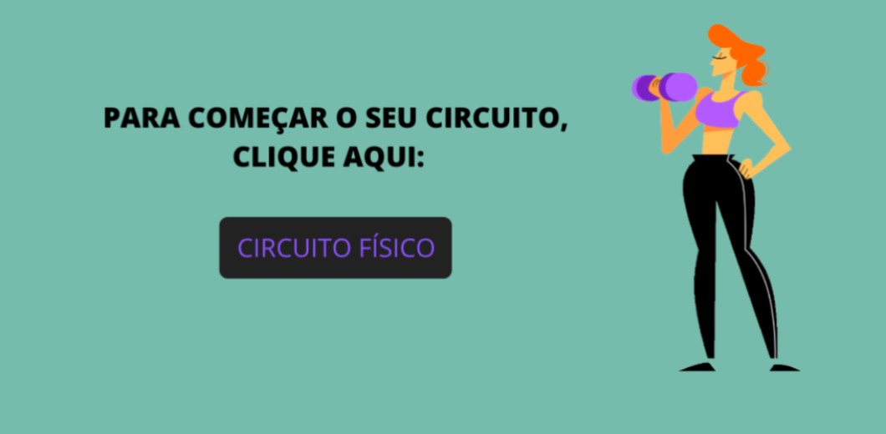
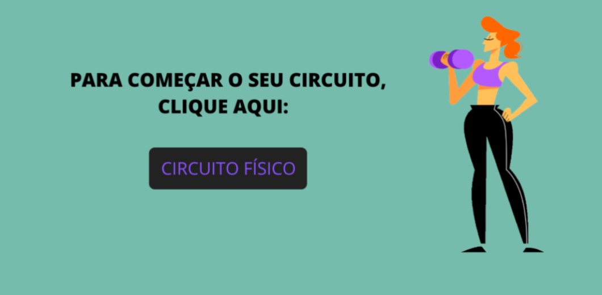

A prática de atividades físicas é de extrema importância para a saúde geral do nosso corpo. Ela é capaz de melhorar nosso bem-estar, a qualidade de vida e até nossa saúde mental.
O exercício ajuda a prevenir muitas doenças e fatores de risco, melhora a sensação de bem-estar, ajuda a manter uma boa imunidade e uma composição corporal mais adequada.
A atividade física é importante para o pleno desenvolvimento humano e deve ser praticada em todas as fases da vida e em diversos momentos, o circuito físico é um exemplos de atividade física.
Todo exercício físico é uma atividade física, mas nem toda atividade física é um exercício físico! Por isso recomendamos estes esportes, que são fáceis de praticar e principalmente muito divertidos.
Futebol: O futebol é a paixão brasileira, quase todos conhecem o futebol e provavelmente você já o praticou em algum nível até o momento. A sua versão de quadra fechada, o futsal,é tão conhecida quanto ele. É um esporte de contato, por isso comece devagar, assim diminuindo as chances de lesões. Campos de futebol ou quadras de futsal são muito comuns no país e pessoas para jogar não vão faltar.
Basquete: Este você provavelmente já conhece, mas mesmo assim vale a pena dizer que é jogado principalmente usando as mãos. Os pontos são marcados quando a bola passa pela cesta. Quadras de basquete não são raras de se encontrar, e normalmente vai encontrar muitas pessoas para jogar.
vôlei: Talvez o menos conhecido daqui é um dos mais difíceis, pois necessita muito mais do trabalho de equipe, porém é mais permissivo pois exige menos preparo do corpo e é o mais indicado para iniciantes.
A caminhada é uma prática que não necessita tanto esforço, porém é muito bem vinda e traz muitos resultados. Procure fazê-la com outras pessoas, pois será mais divertido. Vá a lugares que ainda não foi, ou locais da sua rotina próximos a sua casa(escola, mercado etc). Tome cuidado: Não a faça entre as 10h e 15h, para evitar insolação. Lembre-se de usar protetor solar.
Para quem não quiser sair de casa, apresenta dificuldades em relação à falta de tempo ou condição financeira, o CIRCUITO FÍSICO é uma ótima alternativa. Ele pode ser elaborado de acordo com o objetivo de quem o executa, por exemplo, um circuito de força, aeróbico ou mesmo um circuito geral
.png)
Com base nessas informações, estamos oportunizando um circuito físico geral com o propósito de oferecer mais uma alternativa para as suas práticas. Nesta sugestão, você tem a possibilidade de adequar a intensidade e o tempo de execução dos exercícios, o número de séries diárias ou mesmo a rotina de treino de acordo com sua capacidade física.
O vídeo a seguir te orientará quanto aos exercícios e a sequência a serem executados, no entanto, ele é demonstrativo, ou seja, não obedece os tempos definidos para a realização do circuito.
Lembre-se de organizar antecipadamente o local e os materiais(colchonete ou tapete - se optar ,cronômetro ou relógio e/ou outros materiais que você utilizará durante as atividades). O circuito pode ser realizado dentro de casa ou apartamento, então nesse caso, deixe o espaço livre de objetos que ofereçam riscos de acidentes.
.png) 
